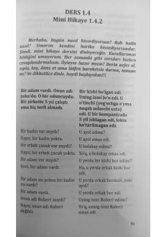

BTTurk tilini mustaqil va tez o'rganish uchun Booknomy metodikasi asosidagi qo'llanma.
Ushbu qo'llanma Booknomy metodikasi asosida turk tilini mustaqil o'rganuvchilar uchun mo'ljallangan darslikdir. Kitobda turkcha matnlar, mini-hikoyalar va ularning o'zbekcha tarjimalari hamda savol-javoblar keltirilgan. Tizimli darslar orqali turk tilida so'zlashish va tinglab tushunish ko'nikmalarini tez fursatda rivojlantirish maqsad qilingan.